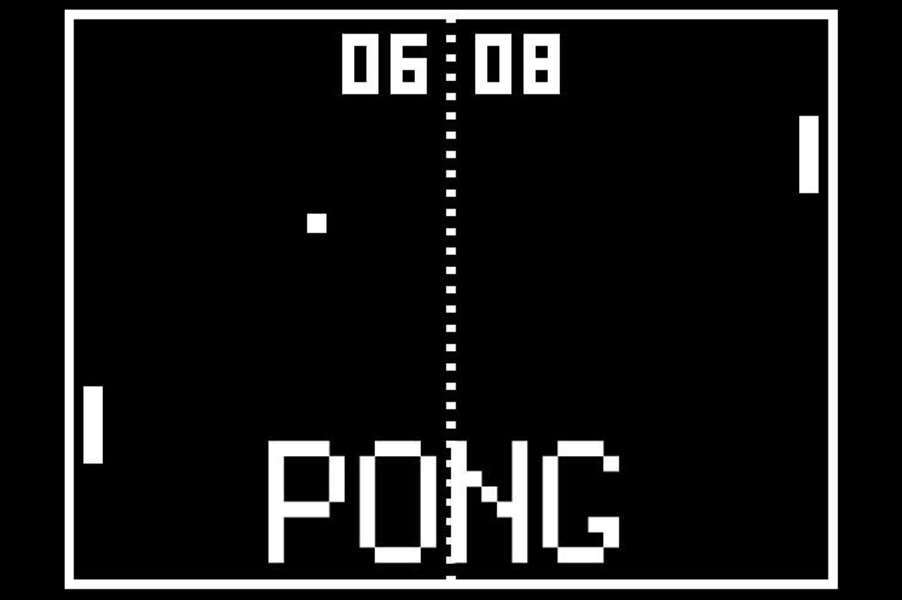
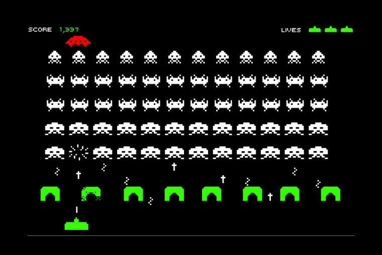

El desarrollo de videojuegos comenzó en 1947, cuando la idea de un videojuego fue concebida y patentada por Thomas T. Goldsmith Jr y Estle Ray Mann, los cuales llenaron una aplicación de patente en Estados Unidos el 25 de enero de 1947. El éxito de los videojuegos se ha extendido hasta hoy día y posee un futuro prometedor para beneficio de la Industria de los videojuegos y de los usuarios finales.
Un videojuego (del inglés video game) o juego de video es un software informático creado para el entretenimiento en general y basado en la interacción entre una o varias personas y un aparato electrónico que ejecuta dicho videojuego; este dispositivo electrónico puede ser una computadora, un sistema arcade, una videoconsola, un dispositivo handheld o un teléfono móvil, los cuales son conocidos como "plataformas". Aunque, usualmente el término "video" en la palabra "videojuego" se refiere en sí a un visualizador de gráficos rasterizados, hoy en día se utiliza para hacer mención de cualquier tipo de visualizador.
Durante bastante tiempo ha sido complicado señalar cual fue el primer videojuego, principalmente debido a las múltiples definiciones que de este se han ido estableciendo, pero se puede considerar como primer videojuego el Nought and crosses, también llamado OXO, desarrollado por Alexander S. Douglas en 1952. El juego era una versión computerizada del tres en raya que se ejecutaba sobre la EDSAC (ordenador de la época) y permitía enfrentar a un jugador humano contra la máquina.
|  |  |